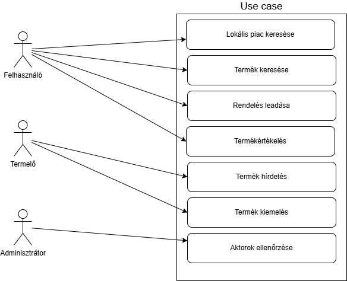

Csoport neve: Developers
Feladat sorszáma: H3
Feladat címe: Software követelmény analízis (SRS)
DOKUMENTUM CÍME
Gyakorlatvezető:
Dr. Mileff Péter
Csoporttagok:
Vörös Vencel Ciprián
| CO5GLF
| vorosvencel0309@gmail.com
|
| Bodnár Dániel |
BVDP8C |
|
| Leányvári Áron |
CU5KNZ |
|
| Kóró Marcell József |
ZH049I |
|
| Nagy Xavér |
R8H3FT |
|
2024.10.29
Történet
| Dátum |
Verzió |
Leírás |
Szerző |
| 2024.09.28 |
1.0 |
Dokumentum létrehozása |
Vörös Vencel Ciprián |
| 2024.10.23 |
1.1 |
H3-as dokumentum véglegesítése |
Vörös Vencel Ciprián |
|
|
|
|
Tartalomjegyzék
- Bevezetés
- Áttekintés
- A rendszer funkciói
- Funkcionális követelmények
- Use Case Diagram
- Use Case-ek kapcsolatainak leírása
- Használhatóság
- Betanulási idő
- Tevékenység végrehajtási idő
- A kezdő felhasználók betanulását segítő tulajdonságok
- Betanulási támogatás lehetőségei
- Felhasználói felület hasonlósága más alkalmazásokkal
- Kompatibilitás más alkalmazásokkal
- Megbízhatóság
- Rendelkezésre állás
- MTBF (Mean Time Between Failures)
- MTTR (Mean Time To Repair)
- A rendszer eredményeinek pontossága
- Teljesítmény Követelmények
- Válaszidők
- Áteresztőképesség
- Kapacitás
- Korlátozott használhatóság idején elvárt teljesítmény
- Erőforrásigények
- Támogatottsági követelmények
- Kódolási szabványok és elnevezési konvenciók
- Karbantartóknak és üzemeltetőknek szánt funkciók
- Naplózás
- Segédalkalmazások
- Tervezési korlátozások
- Architektúra előírásai
- Programozási nyelvek
- Fejlesztőeszközök
- Újra felhasználható elemek
- Fejlesztési módszertan
- On-line dokumentáció és helpdesk
- Online dokumentáció
- Beépített Help rendszer
- Felhasznált kész komponensek
- Nyílt forráskódú komponensek
- Harmadik féltől vásárolt elemek
- Interfészek
- Felhasználói interfészek (User Interfaces)
- Hardver interfészek (Hardware Interfaces)
- Software interfészek
- Kommunikációs interfészek (Communications Interfaces)
- Alkalmazott szabványok
- Kötelezően alkalmazandó szabványok (Mandatory Standards)
- Választás alapján alkalmazott szabványok (Optional Standards)
1. Bevezetés
Az alkalmazás célja, hogy egy fenntartható vásárlói közösséget hozzon létre, amely támogatja a helyi termelőket, és elősegíti az ökológiai lábnyom csökkentését. Ez a platform a környezet iránti felelősségtudatot szem előtt tartva segíti a felhasználókat abban, hogy tudatosabb, fenntartható döntéseket hozzanak a mindennapokban.
Az alkalmazás térképalapú keresési lehetőséget biztosít, amely lehetővé teszi, hogy a felhasználók a közelükben található fenntartható piacokat, termelőket és helyi termékeket fedezzenek fel. Az egyszerű szűrőfunkciók segítségével a felhasználók kiválaszthatják az igényeikhez leginkább illő termékeket, például bio, vegán vagy zero waste kategóriákban. Emellett az értékelési és közösségi funkciók révén a felhasználók visszajelzést adhatnak, megoszthatják tapasztalataikat másokkal, ezáltal egy támogató, fenntarthatóságra épülő közösség részeivé válhatnak.
Ez az alkalmazás egy átlátható, felhasználóbarát felületet biztosít, amely összeköti a környezettudatos vásárlókat a helyi termelőkkel, és lehetőséget ad a fenntartható, helyi gazdaság támogatására.
2. Áttekintés
Ez a fejezet összefoglalja az alkalmazás szempontjából fontos általános körülményeket, megvilágítva a specifikus követelmények mögötti hátteret. Célja, hogy segítse a következő fejezetekben részletezett információk megértését, és keretet adjon az alkalmazás kontextusának és működésének.
Az alábbiak tartoznak ide:
- A termék környezete: A lokális fenntartható piac applikáció a helyi termelőket és fenntartható termékeket előnyben részesítő vásárlókat célozza meg, támogatva a környezettudatos döntéseket és a közösségi gazdaságot.
- Legfontosabb funkciók:Térkép- és keresőfunkció, szűrők (bio, vegán, zero waste stb.), közösségi értékelési rendszer, szállítási lehetőségek a helyi termelőktől.
- A felhasználók jellemzői: Elsősorban környezettudatos vásárlók és helyi termelők, akik érdeklődnek a fenntartható termékek és ökológiai szemlélet iránt.
- Korlátozások: A rendszer működése függ a helymeghatározástól, internetkapcsolattól, és a helyi termelők adatbázisától, amely idővel bővülhet.
- Feltételezések és függőségek: Feltételezzük, hogy a felhasználók rendelkeznek megfelelő mobil eszközökkel, és hozzáférnek az internethez. Függőség például a Google Maps API használata a térképfunkciókhoz.
- A követelmények csoportosításának szempontjai: A követelményeket funkcionális és nem-funkcionális szempontok szerint csoportosítjuk, például felhasználói élmény, adatbiztonság, és hozzáférhetőség alapján.
3. A rendszer funkciói (Specific Requirements)
Ebben a szakaszban összefoglaljuk a rendszerrel szemben támasztott funkcionális követelményeket, amelyek a helyi fenntartható piac alkalmazás funkcióit foglalják magukban. Az alábbiakban természetes nyelven ismertetjük a főbb követelményeket, és használhatók use case diagramok a részletesebb bemutatásra.
3.1 Funkcionális követelmények
- Lokális piac térkép
- A rendszer képes megjeleníteni a felhasználó aktuális helyzete alapján a közeli fenntartható piacokat és termelőket.
- Felhasználók szűrhetik a térképen látható lehetőségeket kategóriák szerint (pl. bio, vegán, zero waste).
- Termékkereső
- A felhasználók képesek keresni különböző fenntartható termékek között.
- A keresési funkció támogatja a szűrési lehetőségeket, hogy a felhasználók könnyen megtalálják az igényeiknek megfelelő termékeket.
- Szállítási opciók
- A rendszer tájékoztatja a felhasználókat a helyi termelőktől elérhető szállítási lehetőségekről.
- Felhasználók rendelhetnek a termelőktől közvetlenül az alkalmazáson keresztül.
Közösségi funkciók
- A felhasználók értékelhetik a helyeket és a termékeket.
- Lehetőség van vélemények írására és megosztására.
3.2 Use Case Diagram

Aktorok
- Felhasználó: A rendszer végfelhasználója, aki fenntartható termékeket keres.
- Termelő: Helyi termelő, aki termékeit a rendszerben értékesíti.
- Adminisztrátor: A rendszer karbantartásáért és a felhasználói tartalmak kezeléséért felelős személy.
Use Case-ek
- Lokális piac keresése
- Rövid leírás:A felhasználó megkeresi a közeli fenntartható piacokat.
- Prekondíciók:A felhasználó be van jelentkezve az alkalmazásba.
- Postkondíciók:A felhasználó látja a közelében elérhető piacokat a térképen.
- Szokásos működés:
- A felhasználó megnyitja a térképet.
- A rendszer megjeleníti a közelében lévő piacokat.
- Alternatív esetek:A felhasználó nem talál piacot a közelében.
- Kivételes esetek:A rendszer nem tudja megállapítani a felhasználó helyét.
- Termék keresése
- Rövid leírás:A felhasználó kereshet különböző fenntartható termékek között.
- Prekondíciók:A felhasználó be van jelentkezve az alkalmazásba.
- Postkondíciók:A felhasználó megkapja a keresési találatokat.
- Szokásos működés:
- A felhasználó beírja a keresett termék nevét.
- A rendszer megjeleníti a találatokat.
- Alternatív esetek:Nincs találat a keresésre.
- Kivételes esetek:A keresési folyamat megszakad.
- Rendelés leadása
- Rövid leírás:A felhasználó rendelést ad le a termelőktől.
- Prekondíciók:A felhasználónak van kiválasztott terméke.
- Postkondíciók:A rendszer rögzíti a rendelést.
- Szokásos működés:
- A felhasználó kiválasztja a terméket.
- A felhasználó megadja a szállítási adatokat.
- A rendszer megerősíti a rendelést.
- Alternatív esetek:Nincs találat a keresésre.
- Kivételes esetek:A keresési folyamat megszakad.
- Termékértékelés
- Rövid leírás:A felhasználó értékeli a megvásárolt termékeket.
- Prekondíciók:A felhasználó megvásárolta a terméket.
- Postkondíciók:Az értékelés megjelenik a rendszerben.
- Szokásos működés:
- A felhasználó kiválasztja az értékelni kívánt terméket.
- A felhasználó megadja az értékelés részleteit.
- A rendszer rögzíti az értékelést.
- Alternatív esetek:A felhasználó módosítja az értékelését.
- Kivételes esetek:A rendszer nem tudja menteni az értékelést.
3.3 Use Case-ek kapcsolatainak leírása
A use case-ek közötti kapcsolatok a következőképpen alakulnak:
- A Lokális piac keresése use case elősegíti a Termék keresése use case-t, mivel a felhasználó általában a piac keresése után kezdi el a termékek keresését.
- A Termék kereséseuse case szorosan kapcsolódik a Rendelés leadása use case-hez, mivel a felhasználónak a keresett termékeket kell megismernie, mielőtt rendelést adna le.
- A Rendelés leadása use case a Termékértékelés use case-t is támogatja, mivel a felhasználónak szüksége van a termékek megvásárlására, hogy értékelhesse azokat.
Ez a szakasz összefoglalja a helyi fenntartható piac alkalmazás funkcionális követelményeit, amely lehetővé teszi a felhasználók számára, hogy könnyen megtalálják a fenntartható termékeket és kapcsolatba lépjenek a helyi termelőkkel.
4. Használhatóság
Ebben a fejezetben a rendszer használhatóságát befolyásoló nem-funkcionális követelményeket részletezzük, külön figyelmet fordítva a betanulási időre, felhasználói élményre és kompatibilitásra. Minden követelmény egy-egy alpontban szerepel.
4.1 Betanulási idő
- Kezdő felhasználók számára: A rendszer betanulása várhatóan rövid időt igényel, mivel az egyszerű navigációs felület és könnyen elérhető súgó segíti a tanulást. Egy kezdő felhasználónak körülbelül 15-20 perc szükséges az alapvető funkciók megismeréséhez.
- Gyakorlott felhasználók számára: Azok számára, akik már ismerősek más vásárlói vagy térkép-alapú alkalmazásokkal, a rendszer használata csupán 5-10 perc gyakorlást igényel.
4.2 Tevékenység végrehajtási idő
- Egy átlagos felhasználó a térképes piackeresés és egy konkrét termék megtalálása során körülbelül 1-2 percet vesz igénybe a keresett termék megtalálásához. Az alkalmazás célja, hogy gyorsabbá és hatékonyabbá tegye a keresést a hagyományos módszerekkel vagy egyéb rendszerekkel összehasonlítva.
4.3 A kezdő felhasználók betanulását segítő tulajdonságok
- Interaktív súgó és útmutató:Az alkalmazás beépített útmutatóval és súgóval rendelkezik, amely lépésről lépésre végigvezeti a felhasználót a legfontosabb funkciókon az első bejelentkezéskor.
- Egyszerűen használható felhasználói felület: Az egyszerű, intuitív kialakítás csökkenti a betanulási időt és segíti az új felhasználók eligazodását.
4.4 Betanulási támogatás lehetőségei
- Dokumentáció: Részletes felhasználói kézikönyv áll rendelkezésre az alkalmazáson belül és a weboldalon, amely bemutatja a fő funkciókat.
- Oktatóvideók és tréninganyagok:Lehetőség van oktatóvideók készítésére, amelyek szemléltetik az alkalmazás használatát. Szükség esetén egyedi tréninganyag is elérhető külön díjazás fejében.
4.5 Felhasználói felület hasonlósága más alkalmazásokkal
- A felhasználói felület kialakítása szorosan követi a piacon elterjedt térképes és piactér-applikációk struktúráját. A már meglévő hasonló alkalmazások (pl. Google Maps) mintájára készült, hogy megkönnyítse a használatot és rövidítse a betanulási időt.
4.6 Kompatibilitás más alkalmazásokkal
- Az alkalmazás egyértelműen integrálható olyan alkalmazásokkal, amelyeket a felhasználók a helyi piactérhez kapcsolódóan használnak (például naptárak, jegyzetelő eszközök). A felület összhangban van a tipikus mobilalkalmazások kialakításával, hogy megkönnyítse a párhuzamos használatot.
5. Megbízhatósági követelmények
Ebben a fejezetben bemutatjuk az alkalmazással szemben támasztott megbízhatósági követelményeket, melyek garantálják a rendszer stabil és kiszámítható működését
5.1 Rendelkezésre állás
- Teljes használhatóság: Az alkalmazásnak a hét minden napján, napi 24 órában elérhetőnek kell lennie. Az elvárt rendelkezésre állás minimum 97%.
- Karbantartási idő: Tervezett karbantartási időt havonta maximum 2 óra időtartamban határozunk meg, amelyet a felhasználók előre értesítést kapnak.
- Korlátozott használhatóság: Részleges leállások (például adatfrissítés) alatt a legfontosabb funkciók, mint a termék- és piacböngészés elérhetőek maradnak, bár csökkentett funkcionalitással.
5.2 MTBF (Mean Time Between Failures)
- Átlagos hiba nélküli működési idő: A rendszernek legalább 2000 óra MTBF-t kell elérnie, ami a hibatűrésre és a stabil működésre vonatkozó magas követelményt biztosít.
5.3 MTTR (Mean Time To Repair)
- Hibajavítási idő:Hibás működés esetén a rendszer legkésőbb 2 órán belül visszaállítható kell, hogy legyen az optimális működési állapotába.
5.4 A rendszer eredményeinek pontossága
- Adatpontosság Az alkalmazás adatainak – például a termékek elérhetőségének és árinformációinak – legalább 95%-os pontossággal kell tükrözniük a valós helyzetet.
- Felbontás: A térképes megjelenítés pontossága 10 méteren belüli felbontással kell, hogy működjön a pontos helymeghatározás érdekében, így a felhasználók a közeli termelőket pontosan megtalálhatják.
6.Teljestítménykövetelmények
Ebben a fejezetben összefoglaljuk az alkalmazással szemben támasztott teljesítménykövetelményeket, amelyek biztosítják, hogy a rendszer a felhasználók számára gyors és megbízható működést nyújtson.
6.1 Válaszidők
- b>Leggyakrabban használt funkciók válaszideje: Az alkalmazás térképmegtekintési és keresési funkcióinak válaszideje 1 másodpercen belüli kell, hogy legyen a gyors felhasználói élmény érdekében.
6.2 Áteresztőképesség:
- Tranzakciók sebessége:Az alkalmazás legalább 50 tranzakció/másodperc feldolgozására képes kell legyen a csúcsidők során is, hogy biztosítsa a felhasználói keresések és adatlekérdezések zökkenőmentes végrehajtását.
6.3 Kapacitás:
- Maximális adatbázis-méret: Az adatbázis kapacitása 5 GBméretig biztosítja az adatok kezelését a kezdeti fázisban, és lehetőséget ad a jövőbeni bővítésre.
- Egyidejű felhasználók száma:Az alkalmazás egyidejűleg legalább 500 aktív felhasználót képes kiszolgálni, hogy minden látogató számára biztosítsa a stabil és folyamatos működést.
6.4 Korlátozott használhatóság idején elvárt teljesítmény:
- Korlátozott működés: A tervezett karbantartás időtartama alatt a legfontosabb funkciók, mint a keresés és térképhasználat, 50%-os teljesítménnyel továbbra is elérhetőek maradnak, így a felhasználók alapvető hozzáféréssel rendelkeznek.
6.5 Erőforrásigények:
- Processzorigény:A szerver oldalán legalább 2 GHz-es többmagos processzor szükséges a rendszer optimális futásához.
- Memóriaigény:A rendszer számára 8 GB RAM szükséges, hogy biztosítsa a megfelelő adatkezelési kapacitást.
- Tárhelyigény:Az alkalmazás adatbázisának és médiaelemeinek tárolására 20 GB tárhely biztosítása szükséges.
- Sávszélesség:A szerveroldali kapcsolatnak legalább 100 Mbps sebességet kell nyújtania a stabil adatátvitelhez.
7. Támogatottsági követelmények
Ebben a fejezetben összefoglaljuk azokat a követelményeket, amelyek az alkalmazás üzembe helyezését és karbantartását támogatják, biztosítva a hatékony hibakeresést és finomhangolást.
7.1 Kódolási szabványok és elnevezési konvenciók
- Kódolási szabványok: A fejlesztés során a PEP 8 Python kódolási szabványt követjük, hogy biztosítsuk a kód olvashatóságát és konzisztenciáját.
- Elnevezési konvenciók: Az elnevezési szabályok magukban foglalják a változók, függvények és osztályok egyértelmű és következetes elnevezését, hogy megkönnyítsék a karbantartást és a kód átláthatóságát.
7.2 Karbantartóknak és üzemeltetőknek szánt funkciók
- Adminisztrációs funkciók: Az alkalmazás külön adminisztrációs felületet biztosít a karbantartóknak, ahol nyomon követhetik a rendszer állapotát, kezelhetik a felhasználói adatokat és elvégezhetik a szükséges beállításokat.
- Adatbázis-menedzsment funkciók: A karbantartók hozzáférést kapnak olyan funkciókhoz, amelyek lehetővé teszik az adatbázis karbantartását, például a régi adatok archiválását és a gyorsítótár tisztítását.
7.3 Naplózás
- Naplók készítése: Az alkalmazás naplózza a fontosabb eseményeket, például a bejelentkezéseket, tranzakciókat és hibákat, amelyek segítik a hibakeresést és a rendszer működésének finomhangolását.
- Naplóformátum:A naplók JSON formátumban tárolódnak, hogy megkönnyítsék az automatizált elemzést és gyors visszakeresést.
7.4 Segédalkalmazások
- Naplóelemző eszközök: A naplók kiértékeléséhez és az esetleges hibák gyors azonosításához külön naplóelemző eszközöket integrálunk, amelyek lehetővé teszik a karbantartók számára a részletes elemzést.
- Rendszermonitorozó eszközök: Olyan monitorozó eszközök beépítése is megvalósul, amelyek a rendszer teljesítményét és erőforráshasználatát figyelik, így időben azonosíthatók az esetleges kapacitásbeli problémák.
8. Tervezési korlátozások
Ebben a fejezetben felsoroljuk azokat a tervezési korlátozásokat, amelyek a fejlesztés során irányt adnak az alkalmazás megvalósításához, valamint a technológiai választásokat és a fejlesztési folyamat szabályait.
8.1 Architektúra előírásai
- Háromrétegű architektúra: Az alkalmazást három fő rétegre (prezentációs, logikai és adatkezelő réteg) építjük, hogy megkönnyítsük a karbantartást és biztosítsuk a moduláris szerkezetet.
8.2 Programozási nyelvek
- Python: Az alkalmazás fő fejlesztési nyelve Python, különösen a szerveroldali logika megvalósítására. Az ügyféloldalon JavaScript, HTML és CSS használata is szükséges a felhasználói felület kialakításához.
8.3 Fejlesztőeszközök
- Fejlesztési környezet: A Visual Studio Code ajánlott fejlesztői környezet, valamint szükséges a Git használata a verziókövetéshez és a csapatmunka támogatásához.
- Mobilplatform-eszközök: Az alkalmazás Android és iOS platformra is telepíthető lesz, a Flutter és az Android Studio a szükséges mobilfejlesztési eszközök.
8.4 Újra felhasználható elemek
- Könyvtárak és API-k:A fejlesztés során olyan Python és JavaScript könyvtárak (pl. Django, Flask) használata szükséges, amelyek segítik a szerveroldali logika gyors megvalósítását és biztosítják a hatékony adatkezelést.
- Komponensek és osztálykönyvtárak: A már elérhető nyílt forráskódú komponensek beépítése javasolt a térképes megjelenítéshez és felhasználói hitelesítéshez.
8.5 Fejlesztési módszertan
- Agilis fejlesztési módszertan: A fejlesztés során iteratív módszertant követünk, amely lehetővé teszi a gyors visszajelzések kezelését és a folyamatos fejlesztést, így minden mérföldkő után kiértékelhetőek az elért eredmények és az esetleges módosítások.
9. Online dokumentáció és Help rendszer
Az alkalmazáshoz szükséges egy könnyen hozzáférhető, online felhasználói dokumentáció és Help rendszer, amely segíti a felhasználókat az alapvető funkciók megismerésében és hatékony használatában.
9.1 Online dokumentáció
- Tartalom:A dokumentáció magában foglalja az alkalmazás funkcióinak részletes leírását, használati útmutatókat, és gyakori kérdéseket (GYIK), hogy a felhasználók gyorsan megtalálják a választ az alapvető problémákra.
- Formátum:Webalapú formában, a mobilalkalmazásból közvetlenül elérhető, hogy bármikor kéznél legyen.
9.2 Beépített Help rendszer
- Help funkciók:Az alkalmazás főbb funkcióihoz kapcsolódó interaktív súgókat is biztosítunk, amelyek lépésről lépésre végigvezetik a felhasználót az adott folyamatokon, például a keresésen vagy a szűrési beállításokon.
- Támogatási elérhetőségek: Az alkalmazás Help rendszerében elérhető egy "Kapcsolat" funkció, ahol a felhasználók közvetlenül segítséget kérhetnek, ha szükséges.
10. Felhasznált kész komponensek
Az alkalmazás fejlesztéséhez felhasználni tervezett, harmadik féltől származó komponensek listája:
10.1 Nyílt forráskódú komponensek
- Ktor:Kotlin alapú szerveroldali keretrendszer, amely hatékony és egyszerű eszközkészletet biztosít a szerveroldali logika megvalósításához. Licenc: Apache 2.0. Ingyenes használatot biztosít, és lehetővé teszi a módosítást és terjesztést, miközben előírja a licenc megjelölését.
- Leaflet.js:Nyílt forráskódú JavaScript könyvtár térképes megjelenítéshez. Licenc: BSD-2 licenc, amely lehetővé teszi az ingyenes használatot, módosítást és integrálást, de a licenc megjelölését előírja.
- Flutter:Mobil alkalmazás fejlesztési keretrendszer, amely Android és iOS platformon is támogatja az alkalmazás futtatását. Licenc: BSD licenc. Nyílt forráskódú, és megkönnyíti a cross-platform fejlesztést.
10.2 Harmadik féltől vásárolt elemek
- A fejlesztési terv jelenlegi szakaszában nem szükséges fizetős komponens. Ha később szükség lenne ilyenre, akkor részletesen rögzítjük a költségeket és a licencfeltételeket.
11.Interfészek
Ebben a fejezetben részletesen ismertetjük a rendszer felhasználói, hardver, szoftver és kommunikációs interfészeit, melyek biztosítják a külső kapcsolódásokat és az alkalmazás működéséhez szükséges integrációkat.
11.1 Felhasználói interfészek (User Interfaces)
- UI szabványok és stílusok: A felhasználói felület fejlesztése során az anyagtervezési (Material Design) elveket követjük, amelyek biztosítják a modern, intuitív és platformfüggetlen megjelenést, összhangban az Android és iOS szabványokkal.
- Felhasználói csoportok igényei:
- Kezdő felhasználók:Egyszerűen navigálható, könnyen érthető interfészek, amelyek tartalmaznak vizuális útmutatásokat és tippeket.
- Haladó felhasználók:Rövidebb munkafolyamatok, gyors elérést biztosító opciók, például testreszabható szűrők és előzmények mentése.
- Fontos UI elemek:
- Navigációs menü: Kategóriák és funkciók gyors elérésére szolgál, logikusan elhelyezve a felhasználói élmény javítása érdekében.
- Térképes nézet:A közeli piacok és termékek vizuális megjelenítése térképen a Leaflet.js használatával.
- Termékkereső és szűrő:Részletes keresési és szűrési opciók fenntarthatósági kritériumok alapján (pl. bio, zero waste).
11.2 Hardver interfészek (Hardware Interfaces)
- Helymeghatározás: A rendszer a mobil eszköz helymeghatározó funkcióját (GPS) használja a közeli piacok megjelenítéséhez és a tartózkodási helyre vonatkozó szűrések alkalmazásához.
- Kamera hozzáférés: Termékek és piacok számára fotó feltöltési lehetőség, a kamera és a galéria hozzáférésen keresztül.
11.3. Software interfészek
- Adatbázis interfész:Kotlin alapú adatbáziskapcsolat biztosítja a felhasználói és termékadatok kezelését. Az adatbázis struktúra a tranzakciók gyors feldolgozását és a termékinformációk folyamatos frissítését támogatja.
- Külső API integrációk:
- Fizetési rendszerek:Harmadik féltől származó fizetési szolgáltatások, például Stripe vagy PayPal API-k, hogy a vásárlási tranzakciók biztonságosan és gördülékenyen történjenek.
- Térképszolgáltatások:Google Maps vagy OpenStreetMap API a helyszínek megjelenítésére és navigációra a felhasználók számára.
11.4 Kommunikációs interfészek (Communications Interfaces)
- Internet kapcsolat:A rendszer működéséhez stabil internetkapcsolat szükséges az adatbázishoz, API-khoz és térképszolgáltatásokhoz való hozzáféréshez
- Push értesítések:Firebase vagy más push értesítési szolgáltatás integrációja a fontos eseményekről (pl. új termékek elérhetősége, piac frissítések) való értesítéshez.
- Adatátvitel titkosítása:Az adatokat HTTPS protokollon keresztül, titkosítva továbbítjuk, amely biztosítja a felhasználói és tranzakciós adatok biztonságát.
12.Alkalmazott szabványok
Ez a fejezet összefoglalja azokat a szabványokat és előírásokat, amelyeket a fejlesztés, üzemeltetés és használat során be kell tartani a rendszer megbízhatósága, biztonsága és jogszerűsége érdekében. Az alkalmazás fejlesztése és működése során a következő kötelező szabványokat vesszük figyelembe:
12.1 Kötelezően alkalmazandó szabványok (Mandatory Standards)
- GDPR (General Data Protection Regulation): Az alkalmazás fejlesztése során betartjuk az EU által meghatározott általános adatvédelmi rendeletet. Ez biztosítja a felhasználók személyes adatainak biztonságát, az adatok kezelésének átláthatóságát és a felhasználói beleegyezés biztosítását az adatkezelés során.
- PSD2 (Payment Services Directive 2):Mivel az alkalmazás integrált fizetési szolgáltatásokat nyújthat, a PSD2 szabályozás figyelembevétele szükséges a pénzügyi tranzakciók biztonságos lebonyolításához és a kétfaktoros hitelesítési követelmények teljesítéséhez.
- ISO/IEC 27001 - Információbiztonság:A felhasználói adatok és a rendszer integritásának védelme érdekében a fejlesztés során az ISO 27001 információbiztonsági szabvány ajánlásait követjük, hogy minimalizáljuk a biztonsági kockázatokat.
- W3C Web Accessibility Standards (WCAG): Az alkalmazás felhasználói felületének fejlesztésekor a W3C akadálymentességi szabványait (Web Content Accessibility Guidelines) figyelembe vesszük, hogy az alkalmazás minden felhasználó számára hozzáférhető legyen, ideértve a fogyatékkal élőket is.
12.2 Választás alapján alkalmazott szabványok (Optional Standards)
Ebben a szakaszban összegyűjtjük azokat a szabványokat és ajánlásokat, amelyeket a fejlesztők vagy a felhasználók saját döntésük alapján, de nem kötelezően alkalmaznak. Ezek a szabványok célja, hogy javítsák a rendszer minőségét, használhatóságát vagy interoperabilitását. A következő választás alapján alkalmazott szabványokat vesszük figyelembe:
- ISO 9241 - Ergonomics of Human-System Interaction: Ez a szabvány az emberi észlelés és interakció szempontjait figyelembe véve segít az alkalmazás használhatóságának javításában. A fejlesztés során a felhasználói felület kialakításánál ezt a szabványt is figyelembe vesszük.
- REST (Representational State Transfer): Az API-k tervezésére vonatkozó architektúra, amely elősegíti a különböző rendszerek közötti zökkenőmentes kommunikációt. A REST alkalmazása egyszerűsíti a fejlesztést és növeli a rendszer rugalmasságát.
- OpenAPI Specification: A rendszer API-jának dokumentálására és tervezésére szolgáló szabvány, amely lehetővé teszi a fejlesztők számára, hogy könnyen megértsék az API működését, és elősegíti a harmadik fél fejlesztőkkel való együttműködést.
- Agile Development Methodologies: A fejlesztési folyamat során a választás alapján alkalmazott agilis módszertanok, mint például a Scrum vagy a Kanban, hozzájárulnak a projekt rugalmasságához és az ügyfél visszajelzések gyors beépítéséhez.
- CI/CD (Continuous Integration / Continuous Deployment):A folyamatos integráció és telepítés szabványai, amelyek a fejlesztési ciklusok automatizálására összpontosítanak, lehetővé téve a gyorsabb hibajavítást és az új funkciók bevezetését.